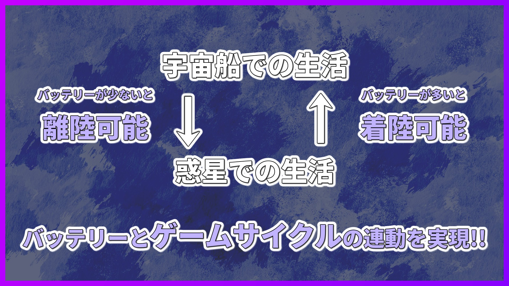
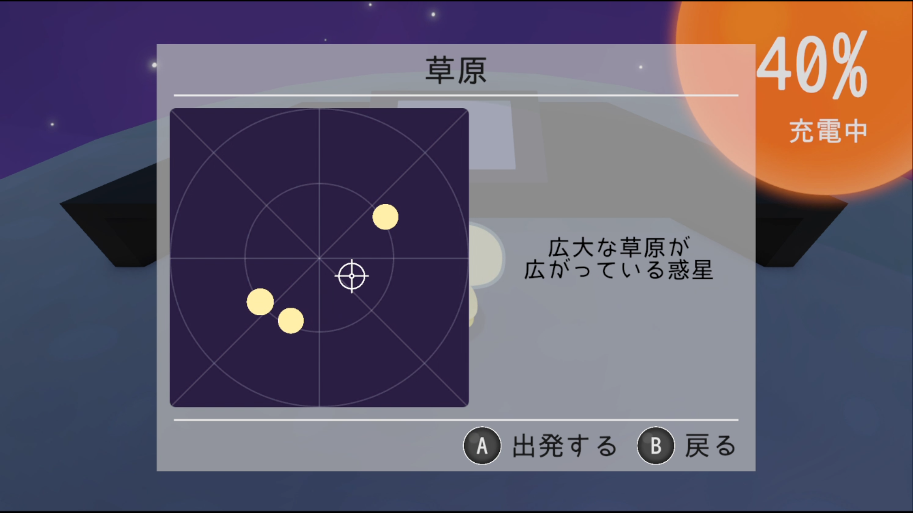
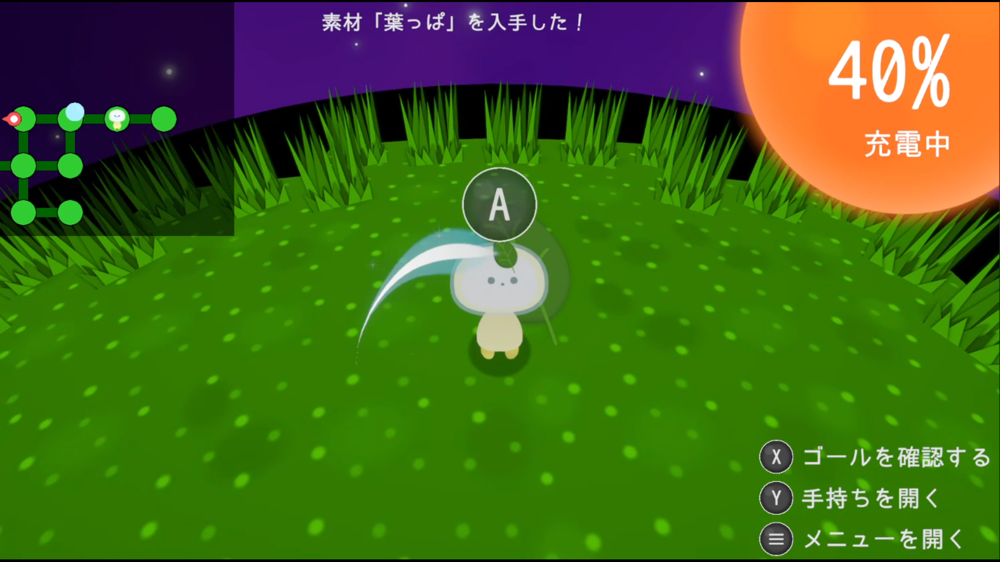

リトラクシー
～星を巡るエネルギー～
Littlaxy: Energy Around the Stars

Littlaxy: Energy Around the Stars
本作は、PCのバッテリーが宇宙船と連動する「バッテリー連動型・スローライフ」ゲーム。
バッテリー残量に応じて、離陸・着陸を繰り返し、
生まれて間もない小さな宇宙「リトラクシー」を旅しよう。
あなたの目の前にある「PCのバッテリー」は、
「宇宙船」だけでなく、「ゲームのサイクル」自体と連動します。
バッテリー残量が高ければ「離陸」でき、少なければ「着陸」できるというシステムにより、
プレーヤーはバッテリーの充電ケーブルを状況に応じて抜き差しする必要が出てきます。
この動作により、目の前のPCがゲーム内の宇宙船とリンクしているかのような、
唯一無二の没入感を生み出します。

バッテリーの増減によって発生する「待ち時間」は、
タイパを重視する現代のプレイヤーを解放する「価値ある時間」であると言えます。
本作は、宇宙の壮大かつ幻想的な世界観により、ゆったりとした時間を提供します。
本作は、バッテリーの増減に合わせて、「宇宙船」と「惑星」を行き来します。
「宇宙船」では、次に着陸する惑星を選んだり、宇宙船のメンテナンスをしたりと、
惑星での生活に向けて、準備を進めます。


| タイトル | リトラクシー ～星を巡るエネルギー～ |
| タイトル(英語名) | Littlaxy: Energy Around the Stars |
| ジャンル | バッテリー連動型・スローライフ |
| 対応プラットフォーム | Windowsを搭載したノートPC ※デスクトップPCでは遊べません |
| 価格 | 無料 |
ここは、生まれて間もない小さな宇宙「リトラクシー」。
テレワークやメンテナンスをこなしつつ、次の行き先を決める宇宙船での生活。
素材を収集し、道を開拓し、現地の生き物と交流する惑星での生活。
2種類の生活を味わえる、バッテリー連動型・スローライフをぜひ体感してください。